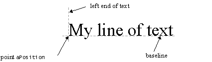
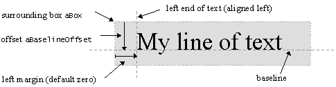

|
| |
The basic way to draw text is to call
CGraphicsContext::DrawText() with a point specifying the bottom
left position, as shown below:

Before calling, you must use the graphics context to:
Set the font to use
Set the pen colour for the text
// In this example, we use one of the standard font styles
CFont* fontUsed = iEikonEnv->TitleFont();
gc.UseFont(fontUsed);
gc.SetPenColor(KRgbBlack);
TPoint pos(50,50);
_LIT(KExampleText,"blacktext");
gc.DrawText(KExampleText,pos);
|
To draw text in a box, you must specify:
a rectangle to draw the text in
an offset from the top of the rectangle to the text baseline: to centre the text, add half the height of the rectangle to half the height of the font's ascent
the text alignment mode: in the example, left alignment is used
a margin: the left margin for left-aligned text, or the right margin for right-aligned text
The following figure show how these fit together:

In addition to the font and pen colour, you can also set the brush for filling the box.
...
// Draw some text left justified in a box,
// Offset so text is just inside top of box
TRect box(20,20,250,100);
TInt baseline = box.Height() /2 + fontUsed->AscentInPixels()/2;
TInt margin=10; // left margin is ten pixels
gc.SetBrushStyle(CGraphicsContext::ESolidBrush);
gc.SetBrushColor(KRgbDarkGray);
gc.SetPenColor(KRgbWhite);
_LIT(KExampleText,"Whitetextleftjustified");
gc.DrawText(KExampleText,
box,
baseline,
CGraphicsContext::ELeft,
margin);
...
Copyright ©2002 Symbian Ltd. 6.1-00174 |
|